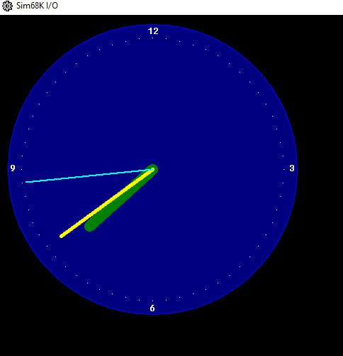
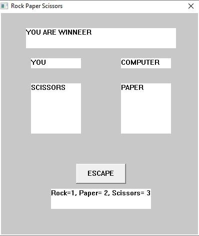
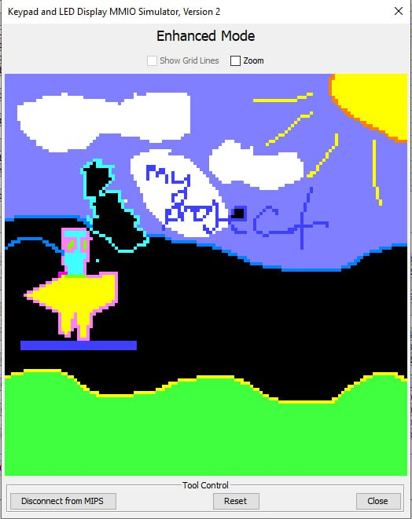

About Assembly
Асемблер це як граблі для програміста. Тому якщо у ваш курс викладач підкинув ассемблер не поспішайте по нього ступати, дозвольте допомогти Вам його омитнути. На перший погляд ассемблер це музейна реліквія яка не вписується у сучасну концепцію розробки програмного забезпечення. У більшості випадків це справедливе твердження оскільки ніша розробки софта на ассембелері практично відсутня.
Для фанатів Computer Science ассемблер розкриває справжню глубину світу нулів та одиниць.
Насправді асемблер доволі проста мова програмування.
Опанувавши асемблер ви зможете побачити найменші деталі операційної системи та сформувати цілісний погляд на розробку програмного забезпечення.
Отже якщо ви не компьтерні гіки та бажаєте зняти з себе тягар асемблеру, звертайтеся за послугами до мене!!!

Projects
-

- 
- 
- 
-

-

-

Services
Консультація
На консультації я ознайомлюся зі специфікою завдання, будь то курсовий проект, лабораторна робота або інше практичне завдання.
Це передбачає з’ясування наявності методичного матеріалу, рекомендацій викладача, ознайомлення із середовищем розробки та допоміжними інструментами.
Попередньо бажано надіслати методичні матеріали до робіт для розуміння загальної картини.
Також на першому дзвінку бажано встановити терміни виконання замовлення і способи оплати.
Лабораторні
Лабораторна робота з програмування включає написання робочого коду відповідно до вимог, оформлення звіту та усні пояснення коду.
Курсові
Курсова робота або учбові проекти включають написання робочого коду відповідно до вимог, оформлення звіту та усні пояснення коду.
Як правило, курсова супроводжується пояснювальною запискою і об’ємним кодом, що зазвичай вимагає більше часу, ніж лабораторні.
Парне програмування
Часом студентам комфортно спостерігати за процесом написання програмуванні на асемблері, тому що в ході роботи можна ставити питання
або пояснити якийсь важливий аспект програмування. Це досить зручний і ефективний метод дослідити проблематику завдання і підготуватися до захисту роботи.
Репетиторство
Класичні індивідуальні уроки з асемблеру. Ключовим аспектом навчання програмуванню є практичні завдання.
Теорія займає не більше 10% уроку. Ця послуга добре підходить для справжніх шанувальників комп’ютерних наук.
PRICING
About me
Усім привіт! Я фанат асемблеру.
Як мене сюди занесло?!
Пам'ятаю лиш як виконав пару лабораторок товаришам.
Мене зовуть Михайло і я допомагаю студентам із лабораторними роботами, курсовими проектами а також викладаю асемблер.